| 日付 | 2026年7月20日（月） |
|---|---|
| 山域 | 高尾周辺 |
| メンバー | 単独 |
| 山行形態 | 日帰り |
| アクセス | 車 |
| ルート (Map) | ゲート前 (8:11) - (8:47) 入渓地点 (8:53) - (9:35) 大滝 - (11:21) 稜線 - (11:33) 生藤山 - (11:58) 尾根分岐 - (12:57) 林道 - (13:02) ゲート前 |
昨日は海に行ったが本日も水。沢登りに行くことにする。
行先は軍刀利沢。生藤山の近くにある初心者向けの沢だ。
林道のゲート手前にある駐車スペースに車を停める。標高380m。
すでに何台か車が停まっている。
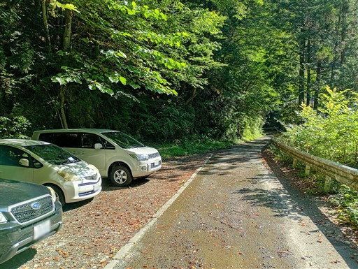
すぐそばのゲートを抜けて林道を歩いていく。
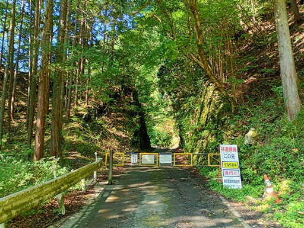
林道沿いにちょっと不気味な花が咲いている。
調べるとマルミノヤマゴボウというらしい。こんな花は初めて見た。有毒らしい。
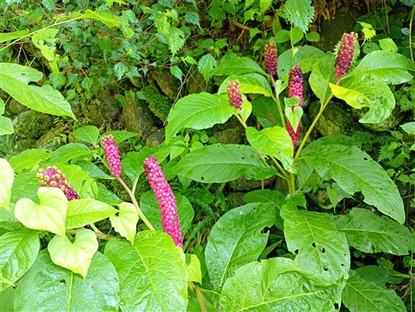
矢沢沿いの林道を歩いていく。沢を歩くか林道を歩くか、どちらが良いのだろう？
林道があるのに沢を歩くのは不合理に思えるし、沢登りに来ているのに林道を歩くのも不合理に思える。
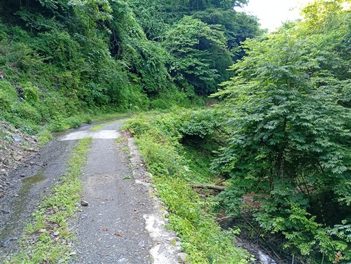
暑い。早く水に入りたい。
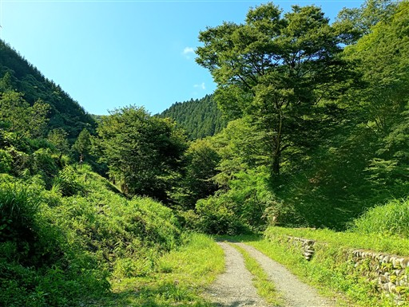
堰堤がある。こういうのがあると沢を歩きにくくなる。
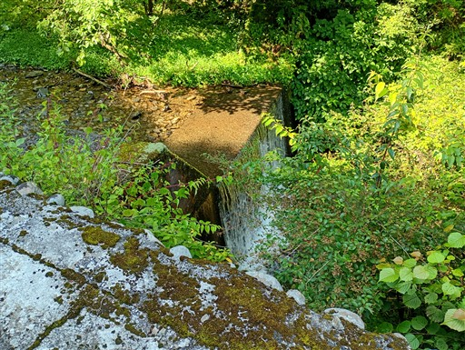
入渓ポイントに到着。ここで準備を整える。
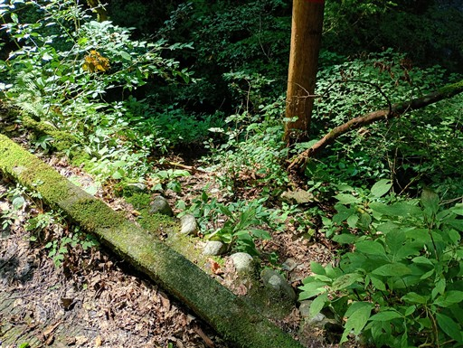
軍刀利沢に入渓。支沢なので水量は少ない。
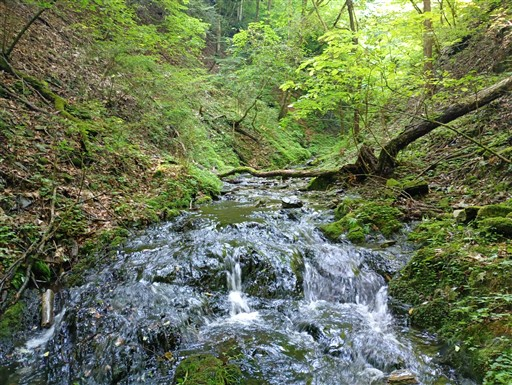
この辺りの岩は縞々模様がある。どういう地層なのだろう？
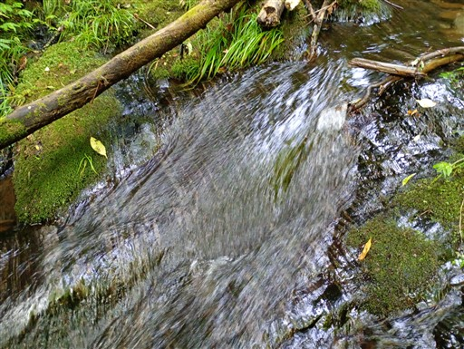
良い雰囲気。
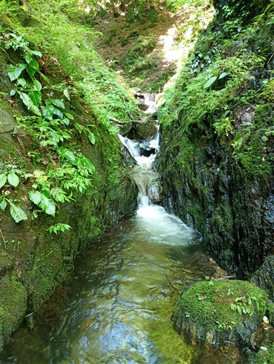
最初の滝。簡単に超えられる。
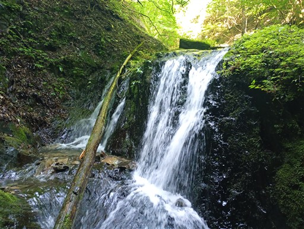
次の滝は少し大きめ。
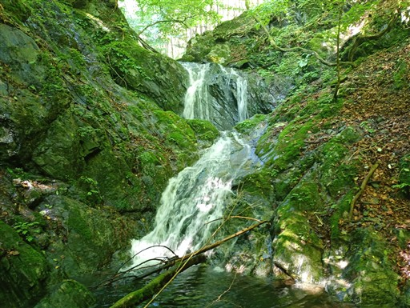
カエルを発見。何匹か見かけた。
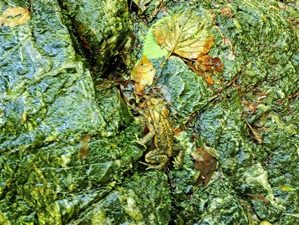
この辺りの川床も縞模様だ。
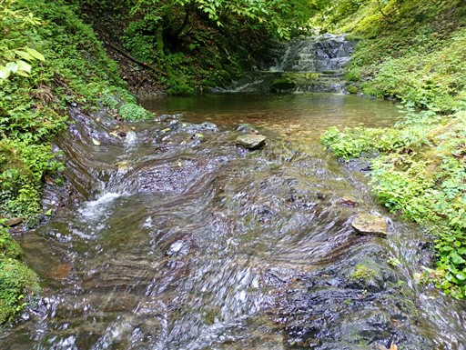
次々と小さい滝が現れる。
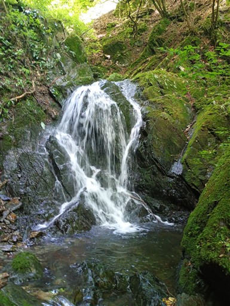
いきなり現れる大滝。15m。
これまでの滝は全て登ってきたが、これは一目見て無理と判断。
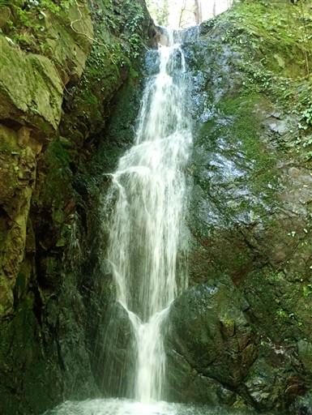
横の巻道を使って越える。
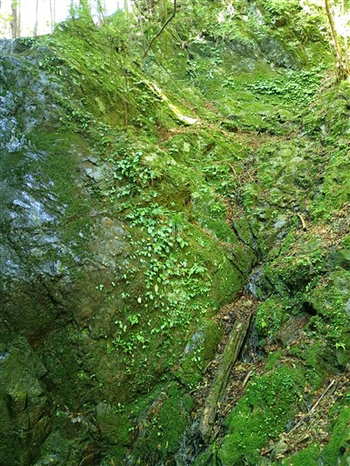
イワタバコが咲いている。本日はイワタバコをたくさん見た。
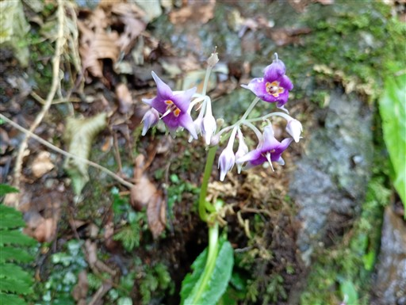
巻道はロープが設置されている。
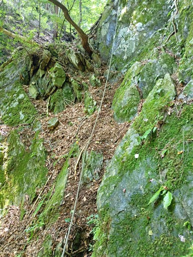
ちょっと難しいがここも突破。ここの突破で水を被り、上半身もだいぶ濡れた。
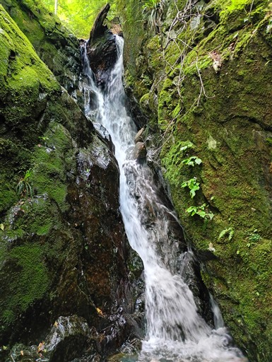
どこを登ったか覚えていないが恐らく右側を登ったはず。
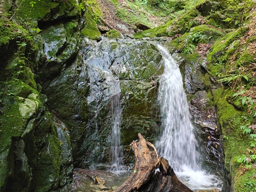
この滝が難しい。左側から登ったが、岩が信じられないくらいツルツルで
途中まで登ったが無理で引き返す。巻道を選択。
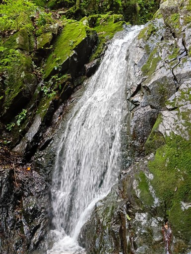
財団法人南郷共益会所有地のプレート。こんな沢の中にまで付けられている。
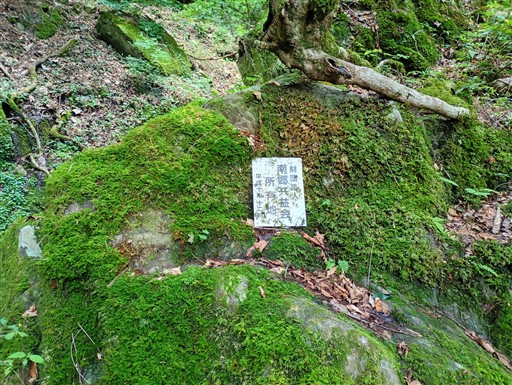
次の滝で先行者に追いつく。
リードの人は登ったらしい。凄い。セカンドの人は上部の途中で撤退。
自分も取り付いてみたが、同じ場所で、あと一歩というところが怖くて無理だった。
凄く滑るし脚のホールドが小さく、もし脚を滑らせたら恐らく落ちる。
途中まで登った後、引き返すのもかなり怖かった。こういう時フリーソロはきつい。
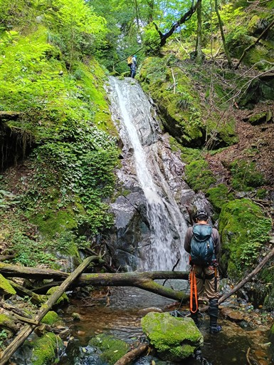
結局、巻いて突破。水量がだいぶ少なくなってきた。
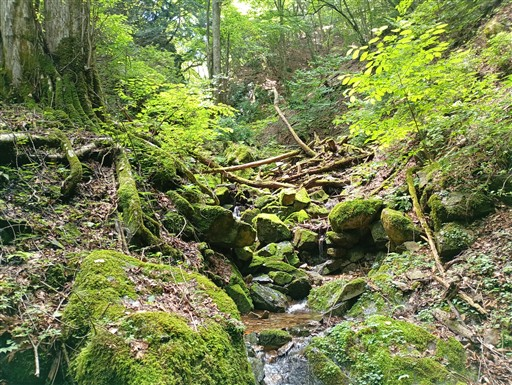
小さな小さな滝。あえて水線を突破。これが最後の滝だった。
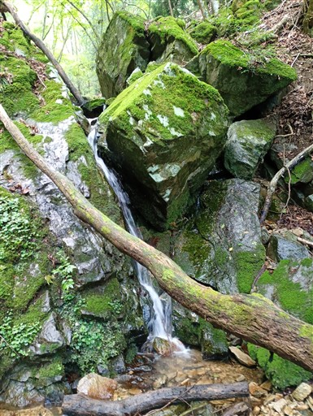
沢が枯れてきた。
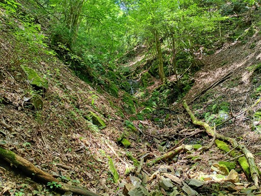
最後の詰め。稜線に出るところは柔らかい泥で登りにくかったが長くは続かない。
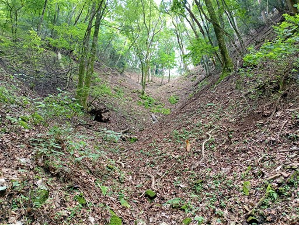
無事稜線に到着。
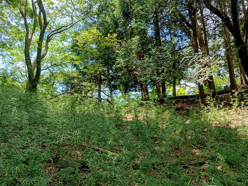
せっかくここまで来たので登山道を歩いて生藤山を目指す。
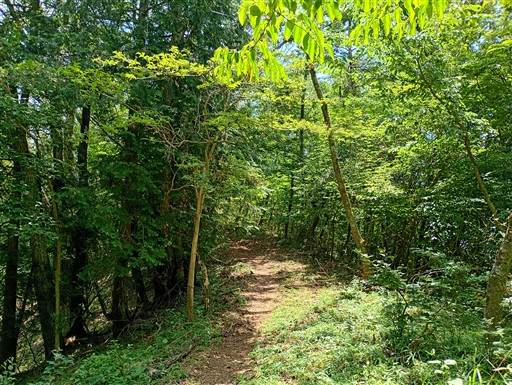
生藤山に到着。標高991m。お昼時なのに誰もいない。
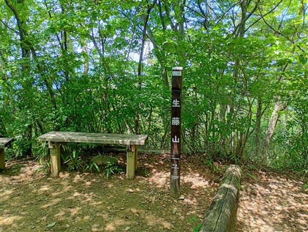
引き返して軍荼利神社に移動。暑いので歩いている登山者はいない。
トレランの人を見かけるのみ。
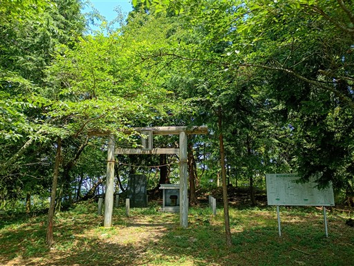
ここからは素晴らしい展望が広がる。
青空が広がっているが、富士山は雲の中だ。
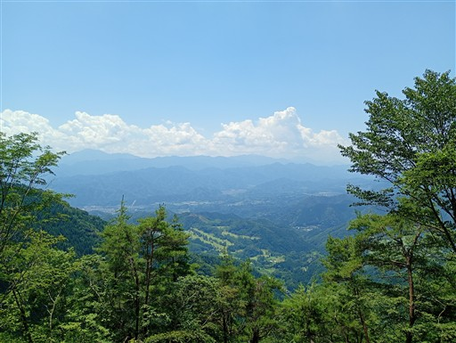
尾根の分岐点に到着。ここからバリエーションルートの尾根を下っていく。
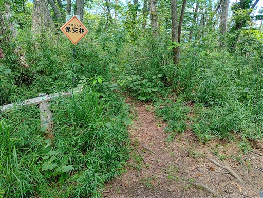
概ね歩きやすい尾根だ。
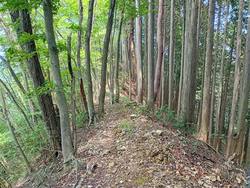
時々、痩せ尾根や岩場が出てくる。難易度は高くない。
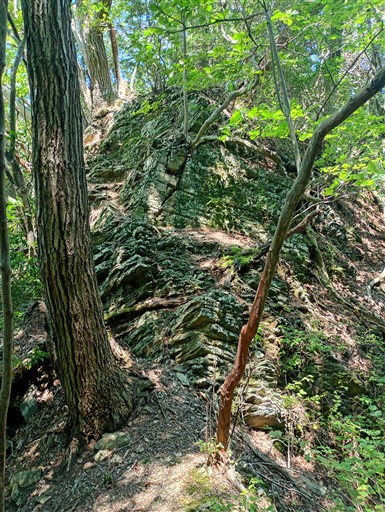
植林地帯。歩いていてさして楽しい尾根ではない。
沢登りの人が下山時に使うくらいだろう。
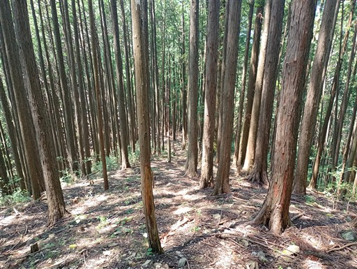
尾根の末端は急坂でちょっと気を使う。
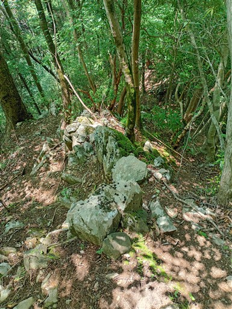
無事、林道に下りてくる。駐車場に戻って終了。
軍刀利沢は滝が多くて疲れた沢だった。まだ次々現れる滝を楽しめるレベルには至っていない。
大滝含め3つの滝は巻いてしまったが、前回よりは少し成長できたと思う。
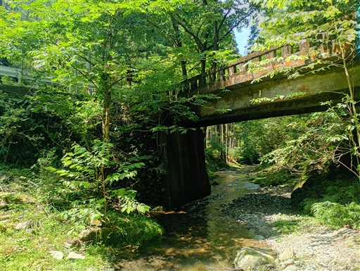